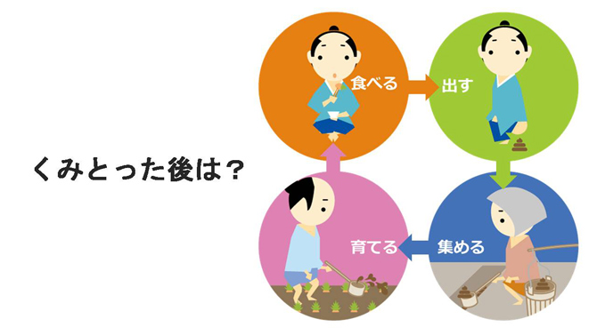
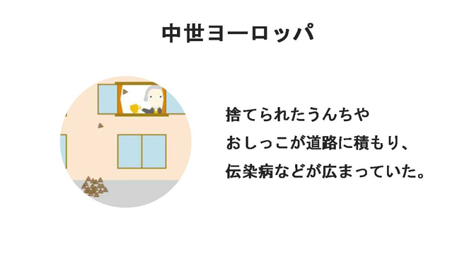
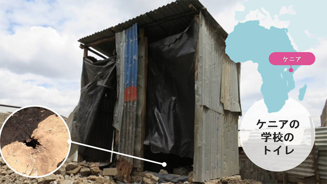
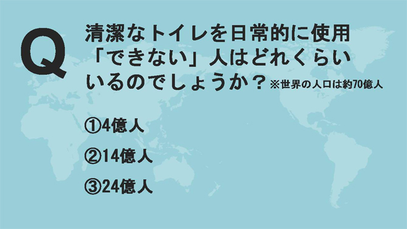
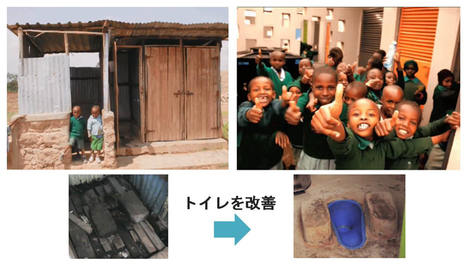
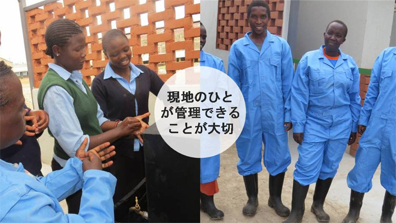

世界では、現在3人に1人が安全で衛生的なトイレを日常的に使用できない環境で生活をしています。そのうち約9.5億人が屋外で排泄を行っています。安全ではない水や不衛生な環境が原因で発症する下痢性疾患により、毎日800人以上もの5歳未満の子どもたちが命を落としています。
LIXILは「優れた製品とサービスを通じて、世界中の人びとの豊かで快適な住生活の未来に貢献」する企業として、この世界的な問題に取り組んでいます。
国内では2015年度よりオリジナル出前授業「トイレが世界を救う！」を地域の小学校で実施していますが、未来を担う子どもたちに、世界のトイレ事情やトイレの歴史、衛生課題の解決に企業が取り組んでいることを知ってもらうことで、清潔なトイレ環境の大切さを深く理解し、自分たちの暮らしを振り返り、考え、行動する機会を創出することを目的としています。
また、各事業所の従業員が授業の講師を務めることで、地域社会との関わりを深め、未来世代への責任について学び、貢献していくことを目指しています。
| 対象 | 小学校高学年（5～6年生） |
|---|---|
| 関連教科 | 総合的な学習の時間、道徳、社会 |
| 授業時間 | 全1時限 |
| 教材 | オリジナルツールを用意。※教材はNPO法人企業教育研究会（ACE）と共同で開発 |
| 内容 |
|
スライド教材 例
トイレの歴史では、排泄物を堆肥として再生し、資源循環させていた江戸時代の優れたシステムを紹介する。
中世ヨーロッパでは、排泄物の不衛生な処理により、伝染病が流行し「トイレの暗黒時代」があったことを学ぶ。
世界の不衛生なトイレの状況について深く考えてもらえるよう、写真を提示して子どもたちに問いかける。
世界では、3人に1人が安全で清潔なトイレを使用できていないという深刻な問題について、クイズ形式で質問し、考えてもらう。
貧困地域では学校に安全なトイレが無いことによって、通学を断念する生徒が大勢いる状況を伝え、その地域での改善事例を紹介する。
トイレを清潔に保つことの重要性を理解し、普段の学校の生活では誰がその役割を担っているのか確認しながら、自分たちの普段の生活についても考えてもらう。
2015~2016年度の2年間で、延べ22回の授業を実施、約1,300名の子どもたちが参加しました。
子どもたちの授業後のアンケートや先生の感想から、普段はきれいなトイレが使えることを当たり前のことと感じており、学校の授業だけでは知り得なかったトイレに関する歴史や世界の衛生問題の現状を知ることで、各自の気づきにつながっていることが伺えます。
また、授業の中での子どもたち同士の意見交換では、学んだ内容について、自分の言葉で意見や感想を述べ合う姿が見受けられます。
そして、従業員自身の知識も深まることはもちろん、普段接しない子どもたちとの交流はとても良い経験となり、従業員の人間的な成長にも寄与しています。
従業員自身が社会貢献活動として取り組むことはもちろん、子どもたちに、技術力だけでなく、おもてなしの心やトイレを清潔に気持ちよく使う日本人のマナーについても周知していきます。